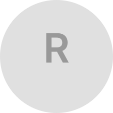

About Me

I'm a UX designer, web designer, and marketing strategist based in Calgary, Alberta. I graduated from the University of Calgary with a Bachelor of Arts in Communication & Culture, specializing in Computer Science and Art & Art History — a combination that shaped how I think about design: through the lens of both logic and expression.
Currently, I work as a Client Success Specialist at ActiveDEMAND, where I help clients get the most out of a marketing automation platform — building landing pages, designing email workflows, and translating complex tools into simple, human experiences. Before that, I spent several years in retail, where I developed a deep appreciation for the people on the front lines of technology. That time directly inspired my Omni redesign project.
I believe the best digital products feel inevitable — like they couldn't have been designed any other way. My work sits at the intersection of empathy, strategy, and craft. Whether I'm mapping a user journey, wireframing an interface, or writing copy for a landing page, I'm always thinking about the person on the other end of the screen.
Outside of design, I'm drawn to music, illustration, and building things on the web just to see if I can.